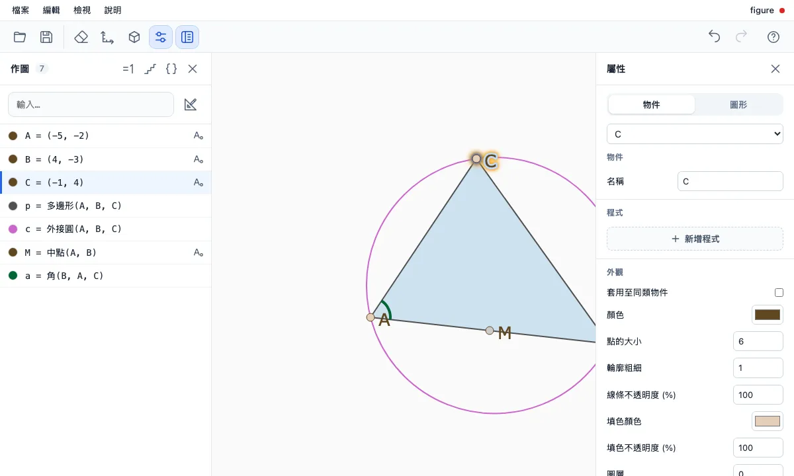
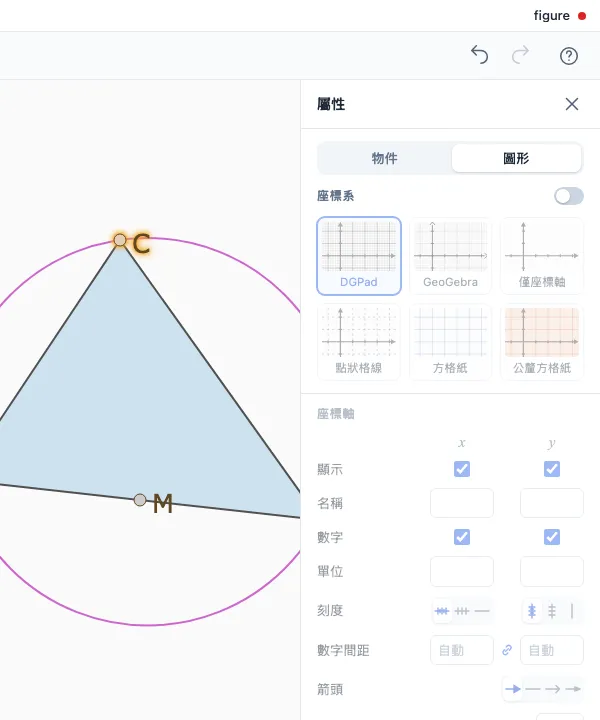

屬性與座標系

面板
- 透過 或情境區的開啟；透過其 ✕、同一個按鈕或Esc 關閉。
- 它與工具面板佔據同一位置：開啟其中一個會關閉另一個。
- 兩個分頁：物件和圖形。
- 要設定的物件可以在圖形中、透過其列，或在「選擇物件…」清單（包括隱藏物件）中選取。在圖形中按一下只選取而不作圖；按鈕和核取方塊被選取而不會被觸發。選單中的工具或輸入列照常作圖，新建的物件顯示在面板中。
- 修改立即生效，並可復原。
- 數值欄位：水平拖曳可調整數值（Shift：精細十倍），按一下可直接輸入。一次拖曳算作一個復原步驟。
- 顏色旁的 ↺ 按鈕將其恢復為工具的預設顏色。
「物件」分頁
| 部分 | 設定 |
|---|---|
| 物件 | 名稱；指令和運算式還有定義 |
| 程式 | 點或運算式的：其海龜和事件程式，以積木顯示 |
| 外觀 | 套用至同類物件、顏色、點的大小、粗細、輪廓、線條和填色的不透明度、填色顏色、虛線、圖層（繪製順序） |
| 顯示 | 顯示物件、顯示名稱、固定物件（多邊形）、惰性物件、文字大小、數值的小數位數（或不顯示） |
| 點 | 形狀（圓、正方形、叉、菱形）、名稱位置（度）、軌跡、水平和垂直步長（跳躍式移動） |
| 線段 | 標記（表示等長的短線） |
| 角 | 弧的半徑、直角標記（開口直角、弧、正方形、點、直角尺） |
| 軌跡、列表 | 點數；線段粗細 |
| 滑桿 | 增量、長度、垂直、滑鈕顏色和大小 |
| 動畫 | 速度（0：停止）、反向、到達端點時：重新開始、來回或停止 |
多個物件
多選時只顯示所有物件共有的設定；各物件取值不同的項目以灰色斜體顯示。Ctrl-點按、Shift-點按或長按（在圖形或「作圖」面板中）可加入或移除一個物件。
惰性物件
惰性物件：物件不再回應滑鼠停留、點按或觸控，在圖形中既不能拖曳也不能選取，指標會作用於其下方的物件。屬性面板開啟時沒有任何物件是惰性的，以便選取它並取消勾選。
「圖形」分頁

按一下座標軸即可開啟此分頁。
| 部分 | 設定 |
|---|---|
| 座標系 | 是否顯示；DGPad、GeoGebra、僅座標軸、點狀格線、方格紙、公釐方格紙樣式（只影響外觀，不影響縮放和背景） |
| 座標軸（x 和 y） | 顯示、名稱、數字、單位（π：π/2 的倍數）、刻度、數字間距（留空：auto；🔗 使 x 和 y 相同）、箭頭、顏色、數字大小和粗體、DGPad 或 GeoGebra 樣式、正半軸 |
| 格線 | 是否顯示、線條間距、細分、顏色（預設與座標軸相同）、粗細、實線、點線或虛線 |
| 縮放與平移 | 座標軸固定於螢幕、以原點為中心縮放 |
| 圖形 | 背景；角度用度（預設）或弧度；線段位於多邊形之上 |
3D 中
| 部分 | 設定 |
|---|---|
| 座標軸 | 顯示三面角、顏色、粗細 |
| 地面 | 顯示、顏色（↺：上方藍色，下方棕色）、不透明度、大小、間距、線條顏色和粗細 |
| 檢視 | 透視 |
這些設定可以復原；檢視的縮放、平移和旋轉則不能。